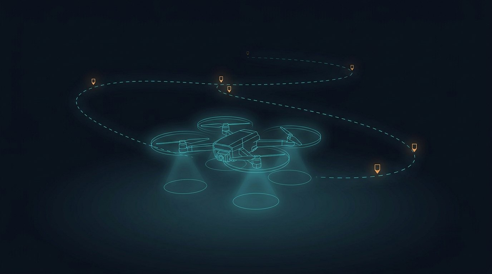
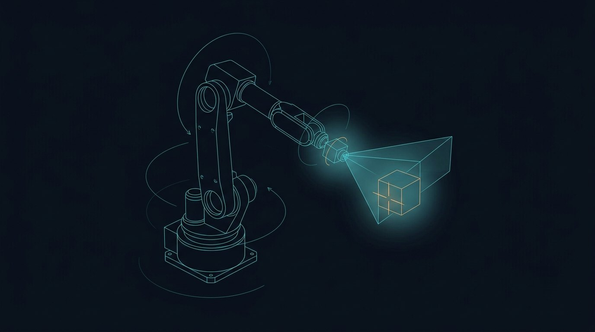

Autonomy Engineer · Controls · Multi-Agent Systems
Prajjwal Dutta builds fleets that stay connected & safe.
Dual-M.S. autonomy engineer (Robotics + Manufacturing Engineering, ASU) specializing in
motion planning, MPC / CLF–CBF–QP control, and multi-agent coordination. I build
end-to-end ROS 2 autonomy stacks — planning, estimation, perception, control — and
validate them on ground, aerial, and underwater platforms.
IROS '26First-author paper
ICRA '25Workshop publication
70Robots coordinated
4.33GPA · MS MfgE
Scroll — swarm holds formation
01 / Background
From flow fields to safety guarantees — proven on hardware.
The swarm behind this page is the problem I work on: agents drifting in a flow field,
holding a connectivity graph while staying collision-free. My research at ASU's AMASS Lab
(NSF- & NIWC-funded) develops decentralized, connectivity-preserving control for robot
fleets in dynamic environments — from AUVs in ocean currents to custom aerial platforms I
designed, fabricated, and flight-tested for sim-to-real validation. BTech in Electronics &
Communication (VIT Vellore) · M.S. Robotics & Autonomous Systems (ASU '25, thesis) ·
M.S. Manufacturing Engineering (ASU, Dec '26).
02 / Research & Publications
Peer-reviewed, first-author.
IROS 2026 · IEEE/RSJ Intl. Conf. on Intelligent Robots and Systems · Accepted
Distributed Control and Communication Framework for Connectivity Preservation in Flow-Driven Robot Fleets
P. Dutta, G. Hollinger, X. Yu — distributed connectivity-preserving control for robot fleets operating in flow fields.
Decentralized Multi-Robot Coordination Under Degraded Comms
Designed a scalable decentralized coordination system combining graph-pruning algorithms
with CLF–CBF–QP safety-constrained control. Built a warehouse navigation stack
benchmarking A*, Hybrid A*, and RRT* against MPC, LQR, Pure Pursuit, Stanley, and PID —
deployed on an Agile X Limo with MoCap ground truth. Designed and built a custom aerial
platform to flight-test the connectivity-maintenance control law, confirming sim-to-real transfer.
A four-axis SCARA, a six-DoF cobot, a stepper conveyor with Hough-circle inspection and
an Allen-Bradley Micro820 moving 100 mm wafers from a stacked cassette to a deposit
platform, one shelf lower each cycle. Re-hosted the extraction stage onto new arm
hardware whose API drops the arm-configuration selector, then solved the deposit fixture
sitting at 393.8 mm of a 400 mm reach — where exactly one IK elbow branch survives the
joint limits — with a hybrid Cartesian/joint-space formulation. Audited the as-built
seven-rung ladder against the manual's stale listing, and designed the two-wire
handshake so every signal fails in a stated direction.
A quadratic-program safety filter keeping a 70-robot team collision-free and line-of-sight
connected through cluttered workspaces and vortex flow fields. Benchmarked quadprog, CVX,
and OSQP on identical safety-critical QP instances; used KKT multipliers to read out which
constraints steer the fleet at every instant.
70robots coordinated
8.6 msavg QP solve (OSQP)
3.5×speedup vs quadprog
79iters — all goals reached
Control Barrier FunctionsConvex OptimizationMATLABOSQP / CVXGraph Connectivity
Robust lateral control for automated driving: nominal MPC plans the tube center, a
discrete LQR ancillary loop rejects disturbance, actuator-aware scaling and saturation
keep commands realizable. Simulink validation cut max lateral error from 18.80 m to
0.032 m; the full CarSim high-fidelity co-simulation at 54 km/h held 0.29 m max deviation.
Full-stack lighter-than-air autonomy: designed the airframe in SolidWorks, fabricated the
platform, and laid out a custom integration PCB in Altium (ESC, IMU, barometer, JST power);
brought up hardware with oscilloscope and logic analyzer. ROS 2 stack fuses a 200 Hz IMU
and 30 fps camera through a Kalman filter, with YOLOv5 detection driving vision-based
control — a hardware testbed for multi-agent sim-to-real experiments.
96%mAP@0.5 detection
<100 msCPU inference
200 HzIMU fusion rate
Altiumcustom PCB design
ROS 2YOLOv5Kalman FilteringPCB DesignRaspberry Pi + ESP32
04 / More Projects
Ground, arm, aerial, industrial.

Competition · Spring 2024
MATLAB Mini Drone Competition
Led a 4-person team to 1st place with a Simulink sim-to-real autonomy pipeline — SLAM and path following — deployed and validated on physical hardware.
OAK-D ArUco 6-DoF pose estimation, dual Kalman / 300-particle filter estimators, PD control with a 3-state FSM, and LiDAR collision avoidance — validated on hardware.
Three standalone ROS 2 packages: OAK-D RANSAC cylinder perception, 3D Bayes-filter localization (80×80×72 belief), and A* planning with Bresenham line-of-sight pruning behind a Turn-Go-Turn controller. 34 unit tests.
Gazebo digital twin of the AWS RoboMaker warehouse with a custom A* global planner in move_base, AMCL localization, DWA local planning, layered costmaps, SLAM (gmapping / Cartographer), and marker-conditioned stop / caution behavior.
→ ±15 cm goal accuracy · 95%+ goal success rate

Manipulation · Fall 2025
ROS 2 Visual Servoing — FANUC LR Mate
Camera-based target tracking mapping 2D detections to 3D workspace goals through geometric inverse kinematics with elbow-up collision avoidance — autonomous end-effector positioning without explicit goal programming.
LQR cart-pole stabilization under a 0.5–4 Hz earthquake disturbance, PD-tuned boustrophedon coverage planning, and a PX4 SITL UAV using RTAB-Map SLAM with RGB-D sensing for autonomous target detection and precision landing.
→ 0.09 rad pole deviation · 70 N peak force · <0.2 unit cross-track error
Co-operative navigation without GPS or vision: a 6-DoF AUV dynamics model with derived thruster transfer functions, LiDAR-only tracking and maze obstacle avoidance, and 50 agents converging on 90°-FOV local sensing alone.
→ 50 agents, decentralized · range and bearing only
Soft Actor-Critic with dynamic entropy tuning: 22-D observation vector, twin critics and a Gaussian actor, Simscape Multibody contact physics — 2-DOF continuous torque control balancing a ball on a plate, converging on multiple distinct strategies rather than one.
Bat-inspired foldable wings — two-layer vinyl/flexure lamination with vein hinges — flapped by a single central servo through a gear-driven four-bar linkage, with measured stiffness, compliance, and inertia feeding MuJoCo and SolidWorks models.
An eight-station pick-and-place tool changer built in six stages on an Allen-Bradley Micro820 — ladder for interlocking, six IEC 61131-3 Structured Text function blocks for arithmetic, and a modulo antipode test that picks the shorter rotational arc to every tool. Verified by reading the ladder compiler's own output.
Three IEC 61131-3 applications commissioned against Factory I/O 3D plant models over an OPC DA/UA link: FBD analog scaling for a process tank, a seal-in motor starter, and a sequential sorting station built on RS latches and CTUD counters.
→ 3 projects · both transfer functions verified against the live plant
ArUco-calibrated eye-to-hand pipeline, color-segmentation board state, alpha-beta pruning AI, IK-computed suction-pump picks — plus a MATLAB digital twin synchronizing a URDF model with the physical arm.
Programmed the UR5 across PolyScope, RoboDK, and URScript for precision waypoint execution, pick-and-place, and assembly with torque-controlled fastening at 3 N·m.
→ three programming paradigms, one arm
Earlier work — Arduino RC vehicle, ROS path-planning comparisons, RFID parking, water-level
control, MEDICO health app — lives in the archive →
05 / Capabilities
Toolkit
Controls & Autonomy
MPC · Tube-MPC · LQR · CLF-CBF-QP
Nonlinear control · visual servoing
Multi-agent coordination
Deep RL (SAC) · coverage planning
Planning & Estimation
A* · Hybrid A* · RRT*
SLAM · Kalman & particle filtering
Sensor fusion · Bayes filtering
State estimation
Software & Simulation
Python · C++ · MATLAB/Simulink
ROS 2 · OpenCV · point clouds
Gazebo · MuJoCo · CarSim · HoloOcean · PX4 SITL
Linux · Docker · Git · PLC (Ladder, Codesys)
Platforms & Hardware
TurtleBot 4 · Agile X Limo · ROSMASTER X3
FANUC LR Mate · UR5 · MyCobot
Blimp · custom aerial platform · Parrot Mambo
OAK-D RGB-D · MoCap · PCB (Altium)
06 / Contact
Building autonomy somewhere hard? Let's talk.
Open to industry roles in autonomous systems, robotics, and controls starting January 2027.